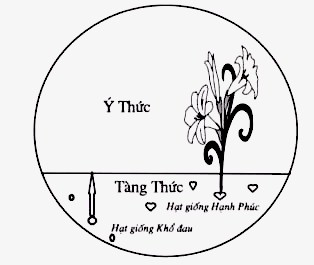

|
Hạnh phúc mộng và thực: Thích Nhất Hạnh |
|
BuddhaSasana Home Page |
Vietnamese, with Unicode Times font |
|
|
Hạnh phúc mộng và thực: Thích Nhất Hạnh |
Dẫn nhập TU HỌC THẾ NÀO ĐỂ CÓ TUỆ GIÁC?PHẦN ĐẦU BÀI PHÁP THOẠI KHAI GIẢNG KHÓA TU MÙA THU 1994 Tu Tập Là Cày Bừa Và Vun Bón Đất Tâm Thưa đại chúng, hôm nay là ngày mồng 1 tháng 9 năm 1994, chúng ta đang ở xóm Thượng, trong ngày khai giảng khóa tu mùa Thu. Nếu tới Làng Mai cách đây mười hai năm, quí vị sẽ thấy quang cảnh của Làng không giống bây giờ. Thí dụ Pháp đường Chuyển Hóa là một chuồng bò, phân bò chất lên rất cao, phía trên toàn là rơm và sàn gỗ mục gần hết. Mỗi khi có việc cần vào, ta thường bị những con mạt cắn khắp mình, khi ra phải đi tắm mới hết ngứa. Cỏ dại mọc khắp nơi, Phật đường Trúc Lâm tức là căn phòng đẹp nhất của xóm Thượng cũng là một chuồng bò chứa phân cao tới gần một thước tây. Chúng ta đã để ra rất nhiều tuần lễ mới chở hết phân ra, rồi phải dùng một máy xịt nước rất mạnh để rửa từng viên đá. Quang cảnh của Làng Mai cách đây mười hai năm rất khác với bây giờ. Trong suốt mười hai năm đó, chúng ta đã cày bừa, dọn dẹp, sắp đặt và quang cảnh của Làng Mai ngày nay tuy chưa được như mình mong ước nhưng cũng đã khá hơn trước rất nhiều. Khi mới đến một vùng đất hoang để khai khẩn, mảnh đất đó có thể làm cho ta nản lòng vì cỏ gai và chướng ngại vật đầy dẫy. Ta cần phải đào, phải bứng, phải chặt, phải cày, phải bừa. Ngưòi làm việc có phương pháp, lúc mới đến họ thường chụp hình khung cảnh đất hoang, rồi mới bắt đầu khai khẩn, xây cất. Sau một hai năm xây dựng họ đem hình ra xem để thấy sự khác biệt giữa hai quang cảnh mới và cũ. TU HỌC LÀ ĐIỀU PHỤC TÂM Sự tu học của chúng ta cũng như vậy. Trước khi tu thì tâm của ta rất là hoang vu và gai góc. Ta tạo ra rất nhiều đau khổ cho chính ta và cả cho những người chung quanh. Trong Kinh Tăng nhất A Hàm quyển 5, kinh thứ 5 và 6 thuộc Hán Tạng, Bụt có nói: "Này các vị khất sĩ, không có một sự vật nào khi không được điều phục mà có thể đem lại nhiều đau khổ như tâm của chúng ta. Này các vị khất sĩ, không có vật nào khi đã được điều phục và chế ngự mà lại có thể đem lại nhiều hạnh phúc như tâm của chúng ta". Vì vậy tu học có nghĩa là điều phục tâm, làm việc với tâm. Trong văn học Nikaya tức kinh Pali, tưong đương với đoạn kinh trên là Kinh Samyutta Nikaya (1), phẩm thứ nhất, Kinh số 6. Bản dịch như sau: "Này các vị khất sĩ, ta không thấy một Pháp nào đưa đến bất lợi như là tâm không được điều phục. Tâm không được điều phục, này các vị khất sĩ, đưa tới những bất lợi rất lớn". Vậy thì ý kinh cũng giống như Kinh Tăng nhất A Hàm. Ta hãy đọc tiếp: "Ta không thấy một Pháp nào khác, này các vị khất sĩ, có thể đưa đến lợi ích như là tâm được điều phục. Ta không thấy một Pháp nào khác, này các vị khất sĩ, đưa đến bất lợi lớn như là tâm không được hộ trì. Ta không thấy một Pháp nào khác, này các vị khất sĩ, có thể đưa đến lợi ích lớn như là tâm được hộ trì. Ta không thấy một Pháp nào khác, này các vị khất sĩ, đưa đến bất lợi lớn như là tâm không được phòng hộ. Ta không thấy một Pháp nào khác, này các vị khất sĩ, có thể đưa đến lợi ích lớn như là tâm được phòng hộ". Sau đó Kinh được tóm tắt lại bằng câu: "Ta không thấy một Pháp nào khác, này các vị khất sĩ, có thể đưa đến bất lợi lớn như là tâm không được điều phục, không được hộ trì, không được phòng hộ, không được bảo vệ. Tâm không được điều phục, không được hộ trì, không được phòng hộ, không được bảo vệ, này các vị khất sĩ, sẽ đưa đến những bất lợi lớn". bất lợi lớn ở đây có nghĩa là những đau khổ cho chính bản thân và cho những người chung quanh. "Ta không thấy một Pháp nào khác, này các vị khất sĩ, có thể đưa đến lợi ích lớn như là tâm được điều phục, được hộ trì, được phòng hộ, được bảo vệ. Tâm được điều phục, được hộ trì, được phòng hộ, được bảo vệ, này các vị khất sĩ, sẽ đưa đến những lợi ích lớn". Lợi ích lớn ở đây là hạnh phúc cho chính mình và cho những người chung quanh. Khi tu, ta tu với cái tâm của ta, nghĩa là ta điều phục, bảo vệ, và hộ trì cái tâm của ta. TÂM CŨNG NHƯ ĐẤT, CHỨA ĐẦY HẠT GIỐNG Trong văn học Phật Giáo, tâm có khi được ví với đất. Tại bất cứ nơi nào ở xóm Thượng, nếu quí vị cày lên một khoảng đất, bừa cho nhỏ rồi tưới nưới, một thời gian sau sẽ thấy rau dền mọc lên. Quí vị hỏi rau dền ở đâu mà mọc ra như vậy? Rau dền đã có hạt giống ngay trong lòng đất ở xóm Thượng. Ngoài hạt giống rau dền, đất xóm Thượng còn chứa rất nhiều loại hạt giống khác. Ta thường chứa hạt giống trong bồ hoặc trong nhà để chờ ngày gieo và do đó ta nghĩ hạt giống là một cái gì có ở ngoài đất. Kỳ thực, hạt giống luôn luôn nằm trong đất. Nếu ta có hạt giống chứa trong bồ thì hạt giống cũng từ lòng đất mà ra, chứ không phải từ trên không rơi xuống rồi đem cất vào bồ. Cái ý niệm đất là tâm là một ý niệm vô cùng tuyệt diệu, vì vậy cho nên ta có chữ tâm địa. Trong đất tâm, ta có đủ mọi hạt giống: hạt giống của gai góc, của tham giận, của si mê, của kiêu căng, của ganh tị v.v... Nhưng trong tâm ta cũng có các hạt giống của hạnh phúc, của giác ngộ, của giải thoát, của sự tha thứ, của sự thương yêu v.v... Tu học có nghĩa là phân biệt cho được những hạt giống đó để chuyển hóa những hạt giống xấu và tưới tẩm những hạt giống tốt. Trước khi tu tập, đất tâm của ta rất cứng và với đất đó ta không làm gì được cả. Vì vậy, việc đầu tiên là phải cày đất. Lưỡi cày đất tâm là chánh niệm. Tại Làng Mai chúng ta có 1250 cây mận. Trước khi trồng mận, ta phải cày những khu đồi. Trồng mận ta phải chọn đất. Đất trồng mận phải là đất trên đồi thì mận mới tốt. Trồng ở thung lũng, vào mùa Xuân sương đọng nhiều, hoa mận có thể bị đóng băng giá, những trái mận có thể chết ngay từ lúc còn trong lòng hoa. Ban đầu ta cày sâu khoảng 40cm rồi đặt những cây mận xuống. Năm thứ hai, giữa những hàng mận con ta phải dùng một lưỡi cày nhỏ, rộng khoảng 5cm và dài gần 1m để cày hai bên hàng mận. Lưỡi cày đó đi sâu vào lòng đất, làm vỡ những tảng đất cứng ở dưới để sau này rễ mận có thể chui qua nếu không, những cây mận này sẽ không có tương lai. Sang năm thứ ba, ta cũng cày lại, nhưng lần này không cày theo đưòng cũ mà cày sang một bên, tiếp tục làm vỡ đất dưới sâu để cho rễ mận có đường chui qua. Nếu không cày nhiều lần như vậy, rễ mận chỉ đi qua trên mặt mà không bao giờ hút được nước và chất bổ ở dưới lòng đất sâu. Vì vậy nhìn bề ngoài ta tưởng công phu cày mận chỉ sâu mấy chục phân thôi, nhưng thực ra ta đã dùng lưỡi cày rất dài và đã cày nhiều năm giữa những hàng mận để cho đất ở dưới sẽ được phá vỡ. Khi cày sâu như vậy, lưỡi cày sẽ giật, sẽ cắt đứt và làm lộ lên những rễ cây, những hạt giống kết tụ từ hàng trăm năm trước. Tu học cũng vậy. Phải biết rằng nếu đất tâm của ta không được điều phục thì đất tâm đó không giúp được gì cho việc tu tập của ta cả. Phải cày đất tâm của ta bằng sự thực tập chánh niệm hàng ngày. Ví dụ nghe chuông là một cách cày ruộng tâm. Làm sao quý vị có thể làm cho tâm mình được phòng hộ, được trở nên tốt đẹp nếu mình không cày sâu xuống mảnh đất tâm của mình? Vì vậy trong đời sống hàng ngày, khi chúng ta nấu cơm, giặt áo, quét nhà, gánh nước, bổ củi là những lúc chúng ta cày miếng đất tâm của chính mình. Ruộng tâm được cày lên để tất cả những gai góc và rễ cây được xắn đứt, trồi lên mặt đất để ta có thể lượm, quăng vào một đống rồi đốt đi. Sáng nay chúng ta đã học sơ lược về cách thỉnh chuông. Thỉnh chuông là một phương thức cày ruộng tâm. Nếu không thành công khi thỉnh và nghe chuông thì có thể sẽ không thành công trong những pháp môn tu tập khác. TU HÀNH CŨNG NHƯ LÀM RUỘNG Nói đến cày ruộng, ta nhớ đến Kinh Samyutta tức là Tương Ưng Bộ, chương 1, kinh thứ 172. Kinh tương đương trong Hán tạng là Kinh Tạp A Hàm. Kinh thứ 98 Tương Ưng Bộ ghi lại rằng: Một hôm Bụt đi khất thực với các thầy ở miền quê nước Kosala (Câu Tát La, tức là nước của Vua Ba Tư Nặc, nơi có vườn Kỳ thọ Cấp Cô Độc ở thủ đô Xá Vệ). Hôm đó là ngày đầu mùa Xuân, các nhà nông đưa trâu ra cày ruộng. Có một vị Bà la môn tên Bhàradvàja (Ba La Đậu Bà Giá), là một chủ điền rất lớn. Ông đem theo tới 500 lưỡi cày, 500 con trâu và rất nhiều lực điền để cày ruộng. Đến giờ nghỉ trưa, họ mang cơm ra ăn. Giáo đoàn của Bụt đi ngang qua và các thầy dừng lại để khất thực. Ông Bà la môn đứng đậy chỉ trích: "Chúng tôi làm ruộng, chúng tôi có đất, có hạt giống, có cày, có bò, chúng tôi cày ruộng, bừa ruộng, gieo hạt giống, cấy mạ, vun bón rồi chúng tôi mới ăn. Các ông không có đất, không có cày, các ông không tưới, không làm gì hết mà các ông cũng đòi ăn là nghĩa làm sao? Bụt mỉm cười nói: "Thưa ông, có chứ, chúng tôi có đất, có hạt giống, chúng tôi có cày bừa, có trâu bò, chúng tôi có gieo hạt, chăm sóc và chúng tôi ăn". Ông Bà la môn nói: "Thầy nói vậy làm sao tôi tin được. Đất của Thầy đâu, hạt giống của Thầy đâu, bò của Thầy đâu, cày của Thầy đâu mà Thầy dám nói rằng Thầy là người cày ruộng?" Bụt liền đọc một bài kệ như sau: à hạt giống Công phu mưa phải thời Chánh niệm là lưỡi cày Tinh tấn là sức kéo Cán cày là trí tuệ Dây cột là ý căn Rễ ách nạn nhổ lên Quả Niết Bàn thu hoạch. Như vậy có nghĩa tâm ta là đất ruộng, và những hạt giống mà ta gieo trên đó là hạt giống của đức tin, đức tin nơi Pháp môn của Bụt, nơi Giáo Pháp và nơi Tăng đoàn. Hạt giống đó cùng với đất tâm là vốn liếng của người làm ruộng tâm. Kinh này cho ta thấy rằng tu hành cũng giống như làm ruộng. Khi tu tập, ta biết tâm mình là ruộng đất, chánh pháp là những hạt giống tốt và chánh niệm là lưỡi cày để phá đất. Chúng ta phải vun bón, phải chăm sóc thì mới có sự thu hoạch tình thương tức là có lòng từ bi. Có trí tuệ, có tình thương thì có vững chải và thảnh thơi, hai đặc tính của Niết Bàn. Vì vậy mà Bụt nói "Quả Niết Bàn thu hoạch". Theo truyền thống đạo Bụt Đại thừa, ta thưòng gọi tâm là đất. Tâm của chúng ta có nhiều ác dụng, nhưng thưòng thường chúng ta chỉ nói tới hai tác dụng chính của tâm. Tác dụng thứ nhất gọi là Tàng và tác dụng thứ hai gọi là Ý. Tâm có thể được tượng trưng bằng một vòng tròn với một dây cung chia vòng đó làm hai phần. Phần dưới tượng trưng cho tàng thức, phần trên tượng trưng cho ý thức.  Tàng ở đây là đất và đồng thời là những hạt giống. Những hạt giống dưới (tàng) có thể mọc lên thành hoa trái ở phía trên (ý). Nếu người làm ruộng phải làm việc với đất thì người tu phải làm việc với tàng thức. Nếu chỉ làm việc với ý thức thôi thì ta sẽ không thành công, vì ý thức chỉ là người làm ruộng còn tàng thức mới chính là đất. Tất cả những hạt giống đều nằm trong tàng thức và chính tàng thức mới cống hiến được những hoa trái của sự hiểu biết, của sự thương yêu, và của sự giác ngộ. Cho nên nếu ta không tu tập thì đất tâm sẽ đưa lên những quả khổ đau, giận hờn, vô minh, và kỳ thị. Vì vậy ý niệm đất rất là quan trọng vì đất luôn luôn cất giữ những hạt giống. Có đất là có hạt giống. Nếu đã tụng Kinh Địa Tạng, chắc quí vị còn nhớ một câu trong bài tựa: "Địa ngôn kiên hậu quảng hàm tàng". Địa có nghĩa là vững chải, là sâu dày, và chứa đựng được rất nhiều; kiên là chắc chắn; hậu là dầy, là có chiều sâu, là chắc chắn. Tính chất thứ ba của đất là quảng hàng tàng. Quảng là rộng rãi, tàng là chứa đựng, quảng hàm tàng là có khả năng bao gồm và chứa đựng rất rộng rãi. Vì vậy chữ tàng thức rất có ý nghĩa: tàng thức là một cái thức chứa đủ tất cả các hạt giống, nó có tính cách vững chải và sâu dày. Hạt giống ở tàng thức có đủ loại: hạt giống xấu, hạt giống tốt, hạt giống của ma và hạt giống của Bụt. hạt giống của khổ đau có mặt mà hạt giống của hạnh phúc cũng có mặt. Vì vậy tàng thức có khi được gọi là nhất thiết chủng thức, tức là cái tâm thức có đầy đủ tất cả các loại hạt giống. Ở Làng Mai, đứng trên đồi nhìn xuống, ta thấy những ruộng nho, những đồi mận rất đẹp. Ta nên biết rằng những vùng đất đó đã được cày bừa rất kỹ lưỡng. Tại Xóm Hạ, đất ở các vường trồng rau trong nhà mặt trời đã được chuẩn bị thật kỹ cho nên ta mới có các loại rau mọc lên rất mạnh và tốt tươi. Sư cô Bảo Nghiêm và sư cô Chân Vị là hai người đã để ra rất nhiều thì giờ và công phu để chăm sóc những vườn rau ở Xóm Hạ. Các sư cô biết rất rõ nếu không xới, không nhổ cỏ, không làm cho đất mềm, đất nhuyễn thì không thể nào trồng rau được. Tâm của ta cũng vậy, nếu tâm của ta không được điều phục, không được uốn nắn, không được bảo hộ thì tâm của ta sẽ gây ra đau khổ và không thể nào tạo được hạnh phúc cho mình và cho người. BA TÂM SỞ MỚI TRONG ĐẠO BỤT NAM TÔNG Trong khóa tu mùa Xuân vừa qua chúng ta đã học về 51 Tâm sở một cách khá kỹ lưỡng. Pháp tướng Duy Thức học và 51 Tâm sở đã trở thành quen thuộc với chúng ta. Nhưng khi đi vào lảnh vực của Nam tông, ta khám phá ra những tâm sở mới không có mặt trong số 51 tâm sở thường được nhắc đến. Hôm nay chúng ta sẽ kể tên ba tâm sở mà chúng ta chưa được học trong số những tâm sở thiện của Đạo Bụt Bắc truyền. Trước hết là Tâm sở nhu nhuyễn, tiếng Phạn là Cittamudutà. Nhu nhuyễn là mềm. Tâm nhu nhuyễn dễ làm việc lắm, còn nếu tâm cứng ngắc thì rất khó làm việc. Đất cứng mà không cày thì không trồng trọt gì được. Hãy lấy một cành cây khô mà ta lượm ở Pháp Thân Tạng làm ví dụ. Khi ta uốn cành cây khô này thì nó gãy. Trong khi đó với một cành tre non hay một dây mây, ta có thể uốn nắm một cách rất dễ dàng. Sự khác nhau giữa cành cây khô và sợi dây mây là ở chỗ một bên có sự nhu nhuyễn, một bên không có sự nhu nhuyễn. Tâm của ta cũng vậy, có khi nó cứng ngắc, cố chấp đủ thứ, dù có người muốn giúp, cố nói cho ta nghe một điều gì đó nhưng tâm ta nó vẫn trơ trơ, vẫn không chuyển lay. Tâm đó gọi là tâm không nhu nhuyễn. Một tâm sở khác là Tâm thích ứng (Cittakarmannata). Ngày xưa dịch là Tâm thích nghiệp, vì trong đó có chữ karma, nhưng dịch là tâm thích ứng thì dễ hiểu hơn. Tâm thích ứng là tâm uyển chuyển, tâm có thể chấp nhận được những hoàn cảnh mà ta không chờ đợi trước. Ví dụ ta có một ý niệm về Làng Mai, nghĩ rằng Làng Mai là thế này hoặc thế kia, nhưng khi về tới Làng thì thấy Làng Mai không giống như những điều mà ta đã vẽ ra, đã suy nghĩ đến, vì không bỏ được cái ý niệm trước của ta về Làng Mai nên ta không thích ứng được. Kết quả là ta cảm thấy thời gian ở Làng Mai không hạnh phúc vì những điều ta mong đợi đã không xảy ra. Tâm đó gọi là tâm không thích ứng. Trong khi đó, tâm thích ứng là tâm dễ hội nhập vói hoàn cảnh trong hiện tại. Hội nhập ở đây không có nghĩa là ta phải bỏ cái của ta và hoàn toàn đi theo cái của người khác. Hội nhập ở đây là ta hòa chung với hoàn cảnh và tìm cách để đem những điểm tích cực của mình ra cống hiến và phối hợp với cái tích cực của địa phương, khiến cho hai cái tốt được pối hợp với nhau. Mình không đánh mất cái tốt của mình mà địa phương cũng không đánh mất cái đẹp của địa phương. Đó gọi là thích ứng. Ví dụ các sư chị ở Việt Nam có cái đẹp, cái hay của truyền thống. Sang Làng Mai các sư chị thấy các sư em thỉnh thoảng thiếu những cái hay đó của truyền thống, nhưng đồng thời các sư chị lại thấy các em có những cái hay của Tây Phương, của "những cái không truyền thống". Nếu các sư chị thích ứng thì các sư chị chấp nhận hoàn cảnh mới rồi từ từ trao truyền những cái hay, cái đẹp truyền thống cho các sư em, đồng thời học những cái hay cái đẹp mà các em có, tại vì mỗi nền văn hóa đều có những nét đặc thù khác nhau. Nếu các sư chị bó tay và nghĩ là mình phải về lại Việt Nam, còn nếu ở lại thì mình sẽ không làm được gì hết, đó là vì các sư chị không có tâm thích ứng. Một tâm sở khác gọi là Tâm hữu năng (Cittapãgunnatà), có khi dịch là Tâm tinh luyện hay Tâm xảo diệu. Tâm xảo diệu là tâm có khả năng làm được những việc mà những tâm khác không thể làm được. Người có tâm đó thì rất khéo léo, khéo léo như hai bàn tạy của một cô Y tá khi chích thuốc hay băng bó. Phải tập luyện lắm mới có được hai bàn tay của cô y tá. Ai muốn biết hai bàn tay của cô y tá như thế nào thì hỏi sư chị Bảo Nghiêm hay sư chị Minh Tánh. Tâm của mình cũng vậy, khi tâm của mình xảo diệu thì mình có thể đối cơ, đối cảnh và độ đời được một cách rất dễ dàng. Mình có thể sống với các sư em, sư anh, sư chị một cách rất hạnh phúc, còn nếu không có tâm xảo diệu, nếu cứng ngắc và không biết thích ứng thì mình chỉ chịu chết thôi. Tất cả những tâm sở và tâm hành này đều có hạt giống ở trong tàng thức. Nếu thực tập chuyện cày ruộng, thực tập chuyện tu học hàng ngày thì hạt giống của tâm nhu nhuyễn, của tâm thích ứng và của tâm xảo diệu sẽ tưới tẩm và ta sẽ trở thành một người sống có hạnh phúc trong bất cứ hoàn cảnh nào. Vì vậy mỗi khi giận, buồn, hoặc thất vọng ê chề, ta thối thất muốn bỏ đi, muốn trốn tránh xã hội loài người thì ta phải biết rằng cái tâm của ta đang còn là một miếng đất hoang, chưa được cày bừa, chưa được tu tập. Bụt dạy rằng tâm không tu tập sẽ đem lại rất nhiều khổ đau cho mình và cho người, tâm được tu tập sẽ đem lại hạnh phúc cho mình và cho người. Vì vậy đối với người tu hành, công việc hàng ngày là cày cấy mảnh đất tâm của mình. Khi ngồi thiền mình cày ruộng tâm của mình. Khi đi thiền hành mình cũng cày ruộng tâm của mình. Khi nghe chuông, khi thở, khi ăn cơm đều là những lúc mình cày ruộng tâm của mình cả. Cũng vậy, khi lượm mận, làm mứt, nấu cơm, đều là những lúc ta cày miếng đất của ta. Đừng nghĩ rằng tu hành chỉ xảy ra trong khi mình ngồi thiền hay nghe thuyết Pháp mà thôi. Cái tâm của mình phải luôn luôn được tu tập. Theo danh từ Hán Việt, tu là làm cho đẹp, làm cho tốt, làm cho nó có thể sử dụng được như trong danh từ tu bổ. Tiếng Phạn, Bhavana (tu) có nghĩa là cày bừa, trồng trọt. Tiếng Pháp là culture, tiếng Anh là cultivation. Ví dụ như tu Từ Bi có thể dịch là The cultivation of Compassion and Loving Kindness. Ta phải cày bừa đất, phải gieo hạt giống, phải tưới tẩm, đó là tu tập. Bhavana là như vậy. Cố nhiên khi muốn trồng thì ta phải có đất mà đất thì đã có rồi. Nhưng có thể đất của ta còn hoang cho nên ta phải dùng cày, dùng bừa, phải tưới tẩm, phải vun bón, phải gieo hạt giống, và phải trừ diệt cỏ. Tất cả những công việc đó đều thuộc vào phạm vi tu tập. Vì những phiền não hàng ngày quấy động và vì ta có hạt giống từ dưới chiều sâu của tàng thức, nên nếu không tu tập thì chúng sẽ lăng xăng, trỗi dậy và làm cho quang cảnh của ý thức tiêu điều. Ý thức là phòng khách của chúng ta, còn tàng thức là kho chứa. Khi kho chứa đầy khổ đau thì thỉnh thoảng khổ đau đẩy cửa vào ngồi chểm chệ trong phòng khách của ta. Nếu không tu tập thì ta không có khả năng đuổi chúng đi, không có khả năng chuyển hóa chúng được. Ý thức là người làm vườn; người làm vườn phải biết điều phục khu vườn của mình, phải biết cày bừa, phải biết nhổ cỏ, phải biết chọn hạt giống, phải biết vun bón, phải biết tưới tẩm thì mới có những hoa trái của hạnh phúc, của thương yêu và của giác ngộ. (1) Trong Văn hệ Pali, Tương Ưng Bộ (Samyutta Nikaya) viết tắt là S.. Vì vậy khi thấy chữ S.. ta biết đó là Tương Ưng Bộ; khi thấy chữ M., ta biết đó là Trung Bộ (Majjhima Nikaya); thấy chữ A. là Tăng Nhất (Anguttara Nikaya); và thấy chữ D. là Trường Bộ (Digha Nikaya).-ooOoo- Ðầu trang | Mục lục | 01| 02 | 3.1 | 3.2 | 3.3 | 3.4 | 3.5 | 3.6 | 04 |
Source: Trang web Quảng Đức, www.quangduc.com
[Trở
về trang Thư Mục]
last updated: 01-04-2005